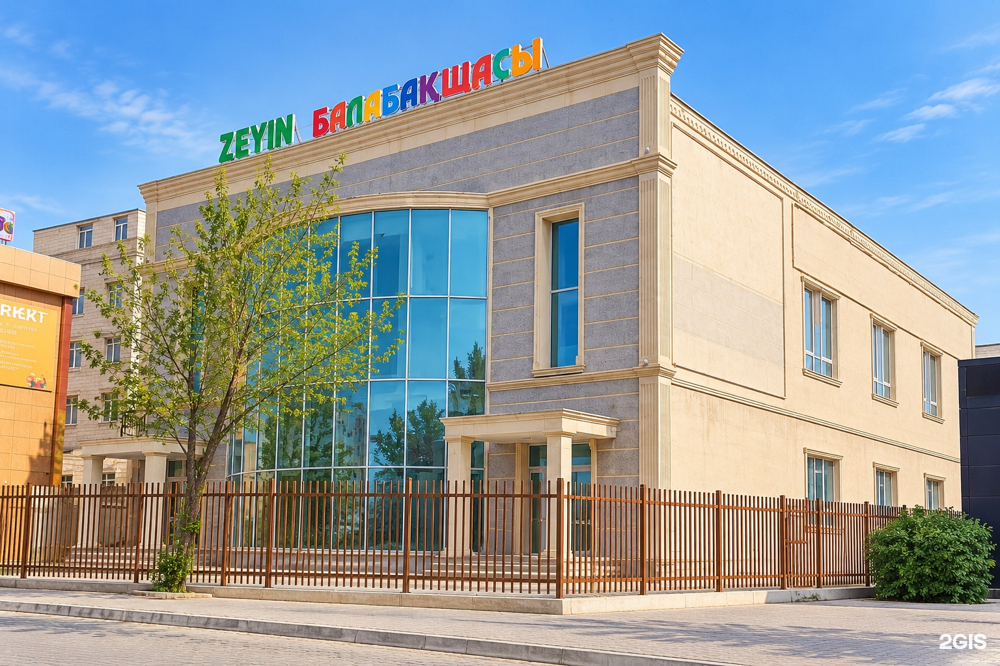
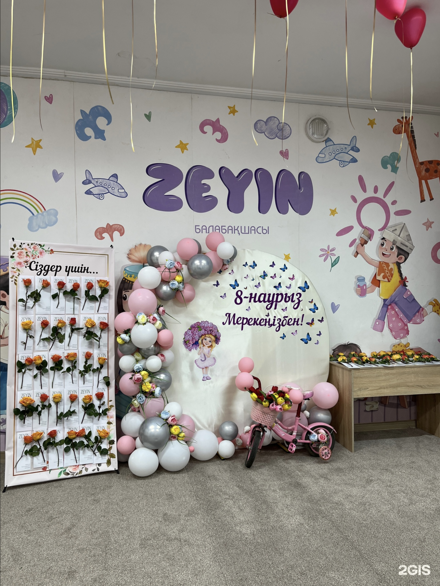

Zeyin балабақшасыҮлкен әлем кішкентай жаңалықтардан басталады.
Ойнау, байқап көру, шығармашылықпен айналысу және өз болмысын таныту.
Әр бала өзінше жаңалық ашатын Zeyin балабақшасына қош келдіңіз!
⌁ Ақтау · 29А шағын ауданы, 38

☀ Бақытты балалық шақ
осы жерден басталады
осы жерден басталады
Бақытты балалық шақӘр бала — ерекшеОйын арқылы өсеміз
Бірге ойнаймыз.
Бірге өсеміз.
Құлыншақ
Балдырған
Күншуақ
Болашақ
01 / БІЗДІҢ ҰСТАНЫМБілуге құштарлыққа
Білуге құштарлыққа
жол ашатын балалық шақ.
Бүгінгі кішкентай қадамдар.
Ертеңгі жаңа мүмкіндіктер.
Zeyin кестесінде шығармашылыққа, қимыл-қозғалысқа, тіл дамытуға және өз бетінше ізденуге арналған сабақтар бар. Әртүрлі үйірмелер балаға жаңаны байқап көріп, өз қызығушылығын табуға көмектеседі.
Апталық кестені көруӨз бетінше байқап көру
Монтессори сабақтарында пішіндермен, заттармен және жаңа тапсырмалармен танысу.
Өзін таныту
Сурет, қимыл, музыка және құммен ойнау арқылы.
Жаңалық ашу
Топ кестесіне сай тіл дамыту, ағылшын тілімен және робототехникамен танысу.
02 / ҮЙІРМЕЛЕРӘлемді танудың
Әлемді танудың
сан алуан жолы.
Кішкентай зерттеушілерге,
болашақ өнертапқыштарға
және би сүйетін балаларға.
Монтессори
Тәжірибе, зейін және материалдармен өз бетінше жұмыс істеу арқылы танимыз.
Тіл дамыту
Логопед сабақтары және ағылшын тілімен танысу.
Түс, пішін, қиял
Арт-терапия мен құм терапиясы — баланың өзін танытуына арналған кеңістік.
Ырғақ пен қуат
Әртүрлі топтардың кестесінде би, балет және бейімделген дене шынықтыру бар.
АЛҒАШҚЫ ӨНЕРТАБЫСТАР
Робототехника
Құрастыру және технологиялар әлемімен танысамыз.
Үйірмелер топқа байланысты өзгереді. Қолданыстағы бағдарлама мен қатысу шарттарын әкімшіліктен нақтылаңыз.
НЕЛІКТЕН ZEYIN?🍽️ 🏡 🎨 🧩
Балабақшаның артықшылықтары.
Бес мезгіл тамақтану
Таңғы астан кешкі асқа дейінгі апталық ас мәзірі.
Заманауи ғимарат
Ақтау қаласы, 29А шағын ауданы, 38-үй.
Түрлі үйірмелер
Топ кестесіне сай шығармашылық, тіл дамыту және қозғалыс.
Ойын арқылы тану
Ізденуге, байқап көруге және жаңалық ашуға мүмкіндік.
03 / ZEYIN-ДЕГІ АПТАӘр күн —
Әр күн —
жаңа жаңалық.
Ұсынылған материалдар негізіндегі «Ботақан» тобының үлгі кестесі.
◷ Сабақ уақыты мен түрлері өзгеруі мүмкін.
Жазылар алдында тобыңыздың кестесін нақтылаңыз.
Жазылар алдында тобыңыздың кестесін нақтылаңыз.
Қимылдаймыз, сурет саламыз
10:30 · Бейімделген дене шынықтыру
11:00 · Арт-терапия
Билейміз, сөйлесеміз
10:00 · Логопед
10:30 · Би
Зерттейміз, жасаймыз
10:00 · Монтессори
11:00 · Арт-терапия
Сөйлеуді, ізденуді үйренеміз
Логопед · Монтессори
Қиялдаймыз, билейміз
10:00 · Құм терапиясы
10:30 · Би
04 / ТАМАҚТАНУӘр күннің
Әр күннің
дәмді сәттері.
Бес мезгіл тамақтану. Апта күнін таңдап, сол күннің ас мәзірімен танысыңыз.
ZEYIN БАЛАБАҚШАСЫ
Біздің команда
Балалардың бақытты болашағына бірге қадам басамыз.
Үлгілік фотосуреттерҚызметкерлер туралы ақпарат жақында жаңартылады.
ZEYIN-ДЕГІ СӘТТЕР
Біздің іс-шаралар
Балаларымыздың жарқын сәттері мен қызықты күндері.
Үлгілік іс-шараларНақты іс-шаралар туралы ақпарат кейін жаңартылады.

ZEYIN · БІЗБЕН ТАНЫСЫҢЫЗКЕҢЕС АЛУ
Бізге жазыңыз.
Топты таңдап, байланыс деректеріңізді қалдырыңыз. Сұрауыңыз WhatsApp-та ашылады.
Күлкіге толы
балалық шақ.
Instagram-да көбірек 


Жақынырақ танысайық.
Zeyin қайда орналасқан?+
Ақтау қаласы, 29А шағын ауданы, 38-үй. Беттің төменгі жағында 2ГИС-тегі бағытқа сілтеме бар.
Бала қандай үйірмелерге қатыса алады?+
Ұсынылған кестеде Монтессори, логопед, ағылшын тілі, робототехника, би, балет, бейімделген дене шынықтыру, арт-терапия және құм терапиясы бар. Үйірмелер топқа байланысты өзгереді.
Төлемақыны, топтардың жас санатын және жұмыс уақытын қалай білуге болады?+
Instagram-дағы @zeyin.aqtau парақшасына жазыңыз. Әкімшілік қолданыстағы шарттар, бос орындар және балабақшамен танысу тәртібі туралы айтып береді.
Ас мәзірін қайдан көруге болады?+
«Ас мәзірі» бөлімінде апта күнін таңдап, сол күннің тағамдарын көре аласыз. Баланың тамақтануына қатысты жеке шектеулерді әкімшілікпен талқылаңыз.
БАЙЛАНЫСТАРМЕКЕНЖАЙАқтау қаласы
29А шағын ауданы, 38 ТЕЛЕФОН / WHATSAPP+7 702 920 5696WhatsApp-қа жазу ӘЛЕУМЕТТІК ЖЕЛІ@zeyin.aqtau
Кездескенше, Zeyin-де!
29А шағын ауданы, 38
КАРТАДА
29А шағын ауданы, 38
Ақтау қаласы